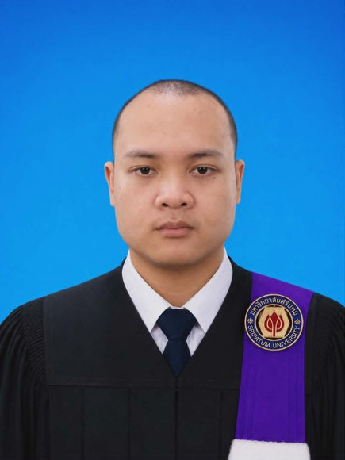

ResumeSARAWOOT PRADASUK
เกี่ยวกับผม
มีความสนใจด้าน IT Support มีความรู้ด้านการติดตั้งและแก้ไขปัญหาคอมพิวเตอร์ การใช้งานระบบเครือข่ายเบื้องต้น และ Microsoft Office มีประสบการณ์จากโครงการพัฒนาระบบ Odoo 17 พร้อมเรียนรู้สิ่งใหม่ มีความรับผิดชอบ และสามารถทำงานเป็นทีมได้ดี
ทักษะ
Microsoft WordMicrosoft ExcelMicrosoft PowerPoint
HTML / CSS (พื้นฐาน)Python (พื้นฐาน)
ติดตั้งโปรแกรมและแก้ไขปัญหาคอมพิวเตอร์
ทำงานเป็นทีมสื่อสารและประสานงาน
ประสบการณ์ทำงาน
สิงหาคม 2025 – มีนาคม 2026
Backend Developer
IOT INOVATION
- พัฒนาและปรับแต่งระบบ Odoo 17 ERP ตามความต้องการของผู้ใช้งาน
- ทดสอบระบบ แก้ไขข้อผิดพลาด (Debug) และตรวจสอบการทำงานก่อนส่งมอบ
- จัดทำเอกสารประกอบการพัฒนาและคู่มือการใช้งานเบื้องต้น
- ประสานงานกับทีมพัฒนาเพื่อวิเคราะห์และแก้ไขปัญหาของระบบ
ประวัติการศึกษา
2022 – 2026
มหาวิทยาลัยศรีปทุม
Sripatum University · เทคโนโลยีสารสนเทศ
ก่อนหน้า
สยามบริหารธุรกิจนนทบุรี
SBAC Nonthaburi
ผลงาน
ERP Odoo 17 · กองสื่อสารตำรวจ
ปรับปรุงฟังก์ชันการทำงานของระบบ และให้การสนับสนุนด้านเทคนิคแก่ผู้ใช้เมื่อเกิดปัญหา
เว็บ Resume นี้
ทำเองตั้งแต่ศูนย์ใน VS Code